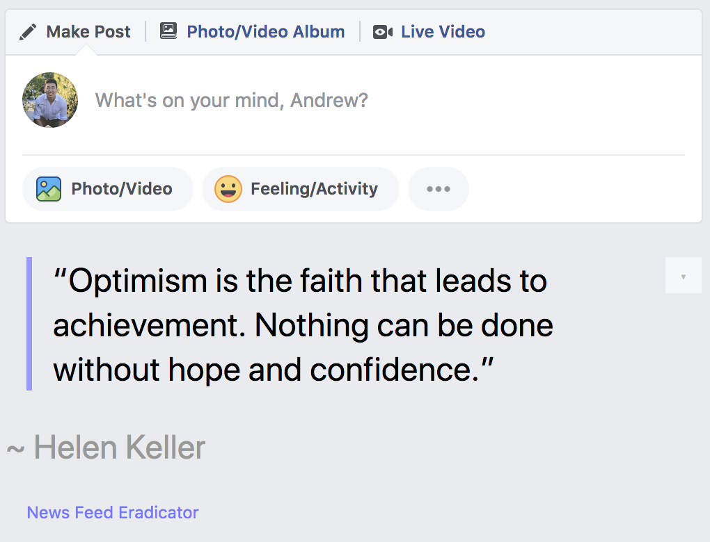
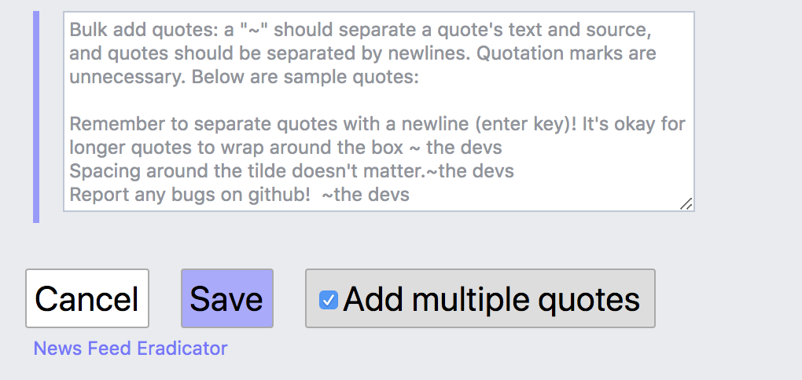
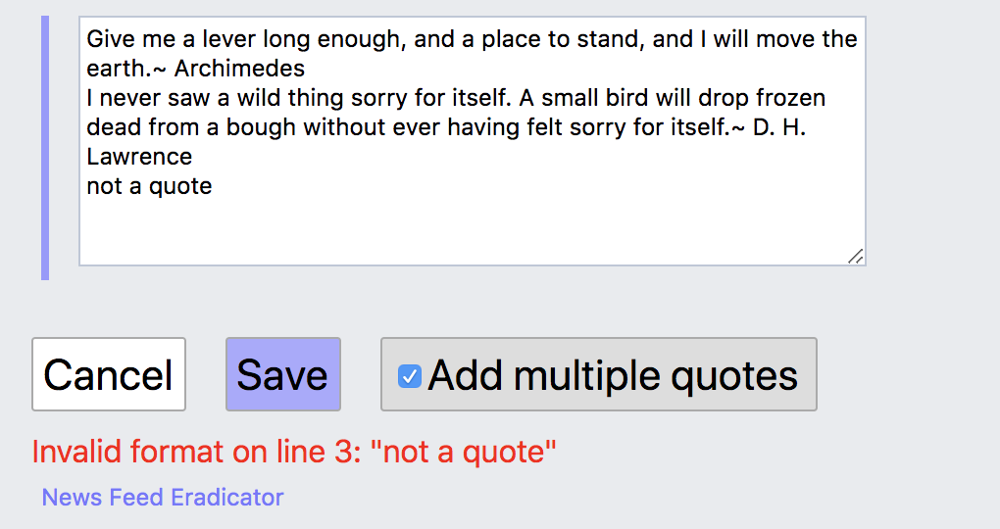

ANDREW CHEN
News Feed Eradicator Open-Source Contribution
Link to GitHub pull request
News Feed Eradicator is a third-party open-source browser extension for Facebook. It blocks the news feed and replaces it with a quote to help users concentrate.
My pull request builds upon adding custom quotes. I added a custom-quote bulk import feature, which has been requested on multiple accounts since 2017. The feature includes quote parsing and error handling. I used Redux, Thunk (Redux middleware), Typescript, and Snabbdom (virtual DOM library).
Screenshots
What News Feed Eradicator does.

Bulk Quote add menu.

An error in bulk quote parsing.